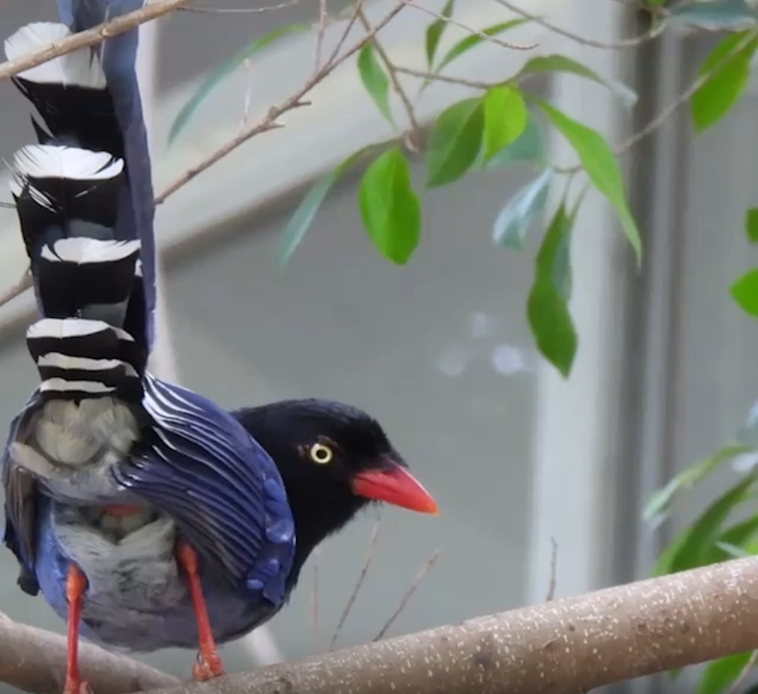
01
FAUNA · 動物類
WILDLIFE EXPLORER
校園野生動物
探索圖鑑
穿越森林、湖畔與草地，追蹤中央大學記錄在案的五大動物類群。每個物種都是一個等待解鎖的生態故事。
進入探索


選擇你的探索路徑，深入了解中央大學校園的生物多樣性

穿越森林、湖畔與草地，追蹤中央大學記錄在案的五大動物類群。每個物種都是一個等待解鎖的生態故事。
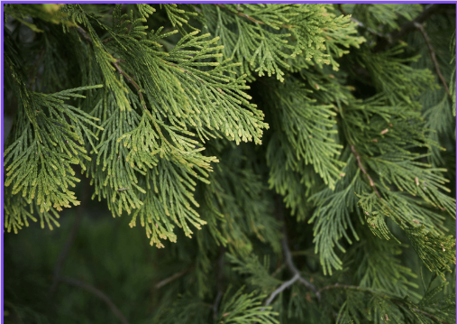
從高聳的台灣肖楠到嬌豔的山櫻花，解讀每一片葉脈背後的生態密碼。沉靜而深刻的植物世界等待你的到來。
接受任務指令，辨識物種、解開生態謎題、挑戰食物鏈知識。每一關都是一次真實的保育行動體驗。
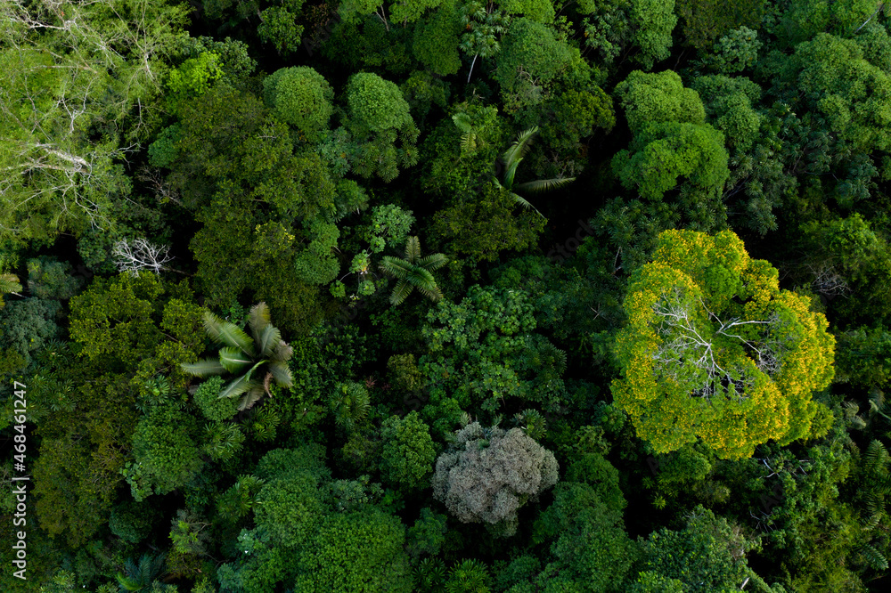
中央大學校園不只是學習的場所，更是豐富生態的家園。我們記錄、研究並分享校園內的每一個生命故事，讓保育意識在日常中扎根，讓永續發展成為每個人的責任。
從森林到湖畔，從草地到樹林，探索校園多樣的生態環境
校園周邊保留的天然次生林，是鳥類、哺乳類與昆蟲的重要棲息地。清晨時分，你能聽見五色鳥的鳴叫，午後則可能遇見覓食的台灣藍鵲。
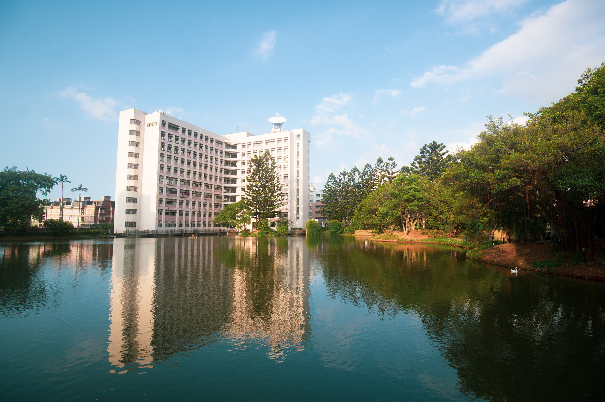
中大湖是校園的生態明珠，提供兩棲類、水鳥與蜻蜓的重要棲地。湖畔的蘆葦叢是澤蛙的家，水面上常見霜白蜻蜓盤旋飛舞。
校園的開放草地是日行性物種的活動場所。清晨的草地上，你可能看見覓食的野鴿，或是正在進行日光浴的斯文豪氏攀蜥。
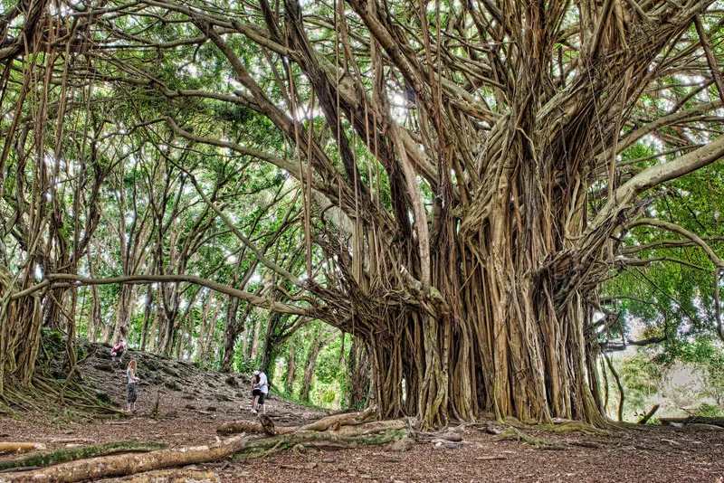
校園內的老榕樹、樟樹與木棉樹，提供了豐富的食物與棲所。樹幹上的空洞是領角鴞的家，樹冠層則是松雀鷹巡視領域的制高點。
透過持續的調查與記錄，我們見證了校園生態的豐富與變化
RESOURCE CENTER · 生態探索中心
每條探索路徑都通往生態智慧的深處 — 選擇你的方式，踏上中大自然的旅程
穿越森林、湖畔與草地，追蹤中央大學記錄在案的五大動物類群。每個物種都是一個等待解鎖的生態故事。
從高聳的台灣肖楠到嬌豔的山櫻花，解讀每一片葉脈背後的生態密碼。沉靜而深刻的植物世界等待你的到來。
接受任務指令，辨識物種、解開生態謎題、挑戰食物鏈知識。每一關都是一次真實的保育行動體驗。
校園每個角落都可能藏著珍貴的生態紀錄。 您的回報將成為中大生物多樣性資料庫的一部分， 讓更多人看見這片土地的生命力。
「自然不需要人類，
但人類需要自然。」
參與我們 · Join the Mission

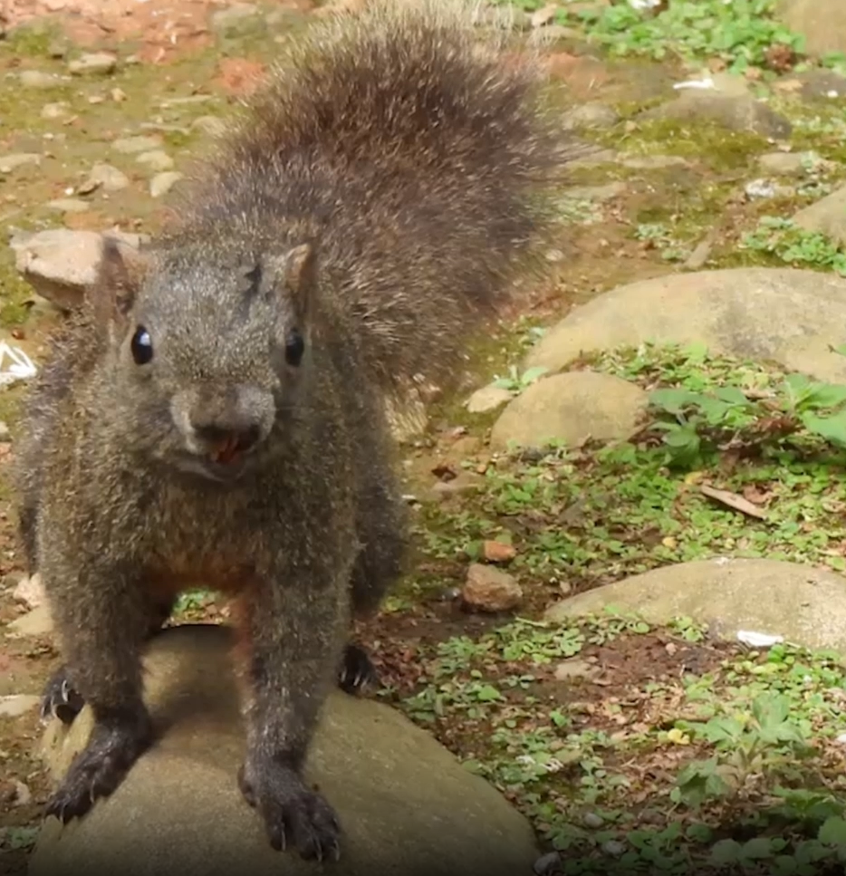
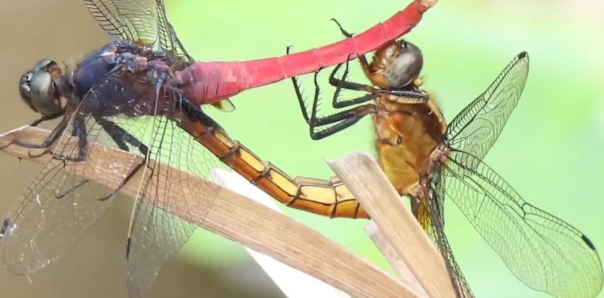
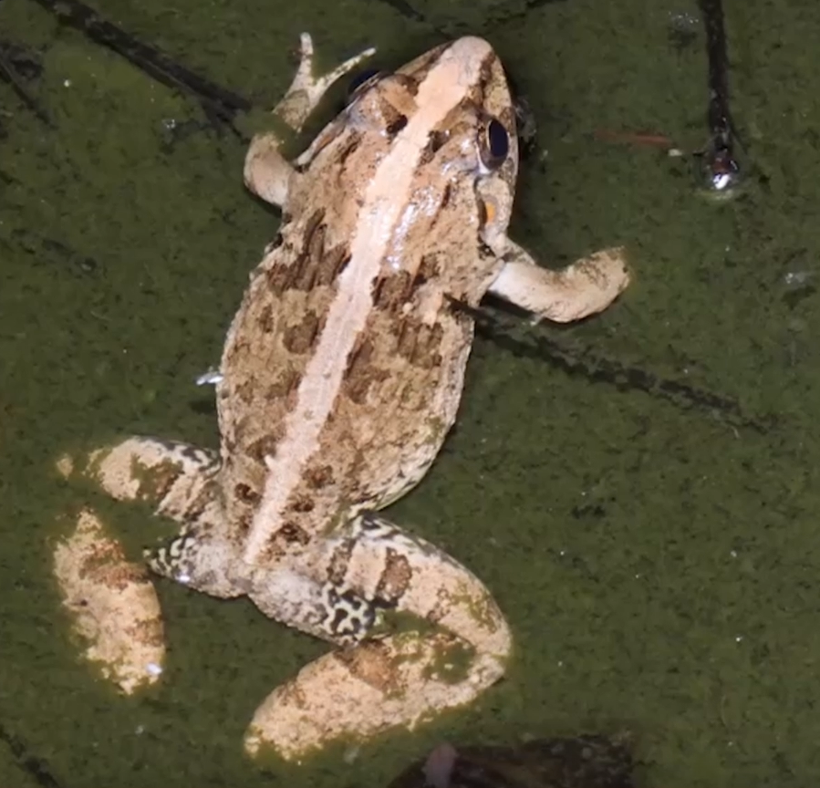
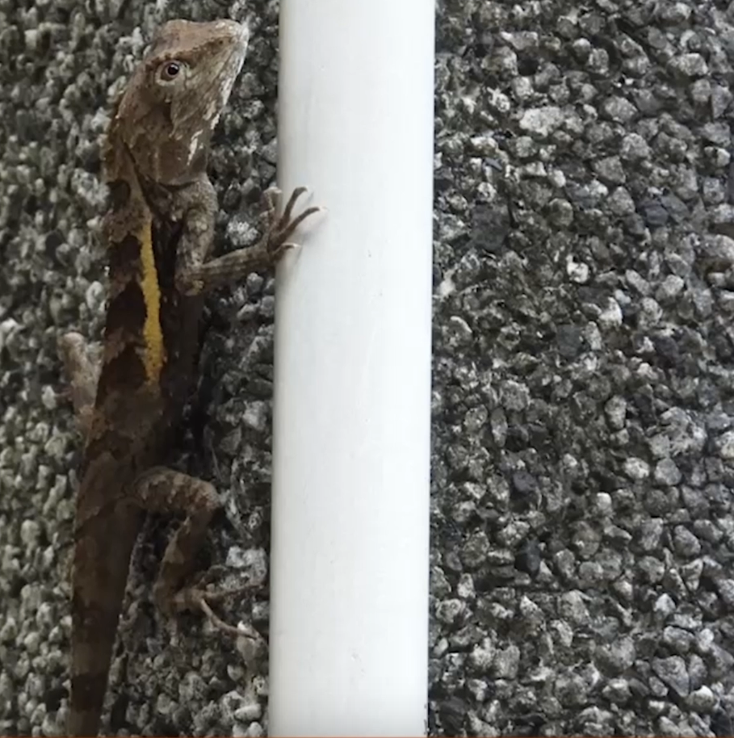
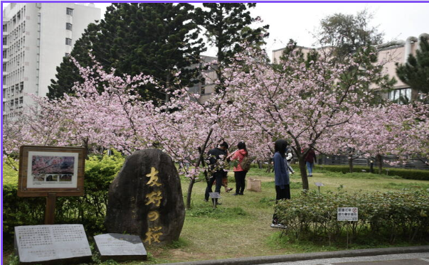
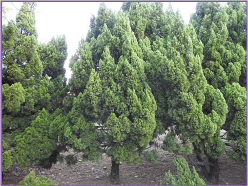
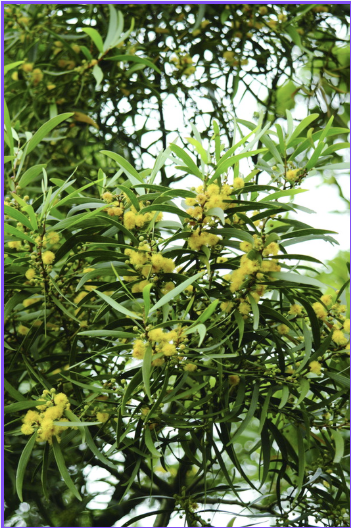
English Name · Scientific name